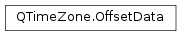

QTimeZone.OffsetData¶
Detailed Description¶
The time zone offset data for a given moment in time, i.e. the time zone offsets and abbreviation to use at that moment in time.
- OffsetData::atUtc The datetime of the offset data in UTC time.
- OffsetData::offsetFromUtc The total offset from UTC in effect at the datetime.
- OffsetData::standardTimeOffset The standard time offset component of the total offset.
- OffsetData::daylightTimeOffset The DST offset component of the total offset.
- OffsetData::abbreviation The abbreviation in effect at the datetime.
For example, for time zone “Europe/Berlin” the OffsetDate in standard and DST might be:
- atUtc =
PySide2.QtCore.QDateTime(PySide2.QtCore.QDate(2013, 1, 1),PySide2.QtCore.QTime(0, 0, 0),Qt.UTC)- offsetFromUtc = 3600
- standardTimeOffset = 3600
- daylightTimeOffset = 0
- abbreviation = “CET”
- atUtc =
PySide2.QtCore.QDateTime(PySide2.QtCore.QDate(2013, 6, 1),PySide2.QtCore.QTime(0, 0, 0),Qt.UTC)- offsetFromUtc = 7200
- standardTimeOffset = 3600
- daylightTimeOffset = 3600
- abbreviation = “CEST”
-
class
PySide2.QtCore.QTimeZone.OffsetData¶ -
class
PySide2.QtCore.QTimeZone.OffsetData(OffsetData) Parameters: OffsetData – PySide2.QtCore.QTimeZone::OffsetData
-
PySide2.QtCore.QTimeZone.OffsetData.abbreviation¶
-
PySide2.QtCore.QTimeZone.OffsetData.atUtc¶
-
PySide2.QtCore.QTimeZone.OffsetData.offsetFromUtc¶
-
PySide2.QtCore.QTimeZone.OffsetData.standardTimeOffset¶
-
PySide2.QtCore.QTimeZone.OffsetData.daylightTimeOffset¶
© 2018 The Qt Company Ltd. Documentation contributions included herein are the copyrights of their respective owners. The documentation provided herein is licensed under the terms of the GNU Free Documentation License version 1.3 as published by the Free Software Foundation. Qt and respective logos are trademarks of The Qt Company Ltd. in Finland and/or other countries worldwide. All other trademarks are property of their respective owners.